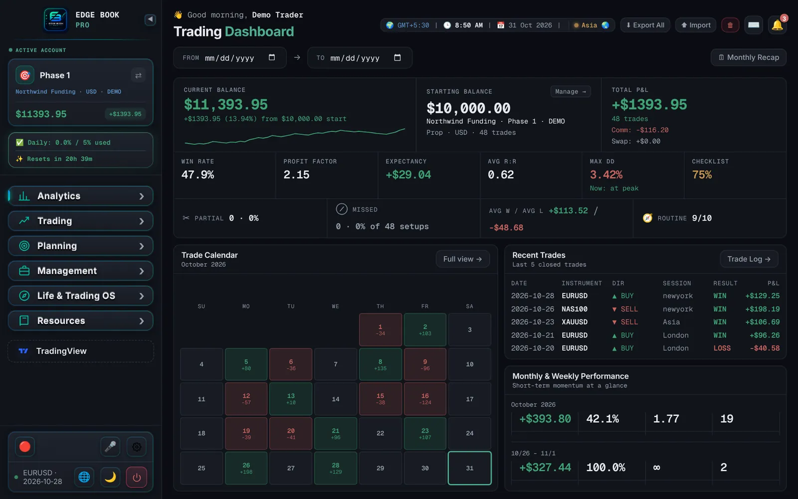

Plan
A pre-trade checklist scores your setup, risk and state of mind before the order goes in — and Trade Lab lets you build a full watchlist ahead of time, with bias, key levels and a chart snapshot per symbol, locked once the session starts.
EdgeBookPro is a pre-trade checklist and trading journal in one desktop app, for traders who work global markets and Indian markets and are tired of switching tools, or units, between them.
100% free. No card, no trial limits, no licence key.

Pick a feature to see the screen. Nothing is gated behind a higher tier. The screens below use demo data.
Set the market type once, per account. It carries through the checklist, the live tracker, the trade log and every report, with labels, currency and charges included.
Zero relabeling. Lots stay lots, shares stay shares, pips stay pips, points stay points. STT, DP charges and GST are worked out on the Indian side automatically.
The same three steps, from the pre-trade checklist to the PDF report.
A pre-trade checklist scores your setup, risk and state of mind before the order goes in — and Trade Lab lets you build a full watchlist ahead of time, with bias, key levels and a chart snapshot per symbol, locked once the session starts.
Live position tracking with running timers, partial closes logged leg by leg, and P&L that updates itself the moment you scale out.
Analytics, a back test lab, and an institutional-style PDF report turn the ledger into an argument for what actually works — and Trade Lab checks what you actually traded against what you planned, flagging unplanned trades and direction mismatches automatically.
NSE, BSE and MCX are first-class markets here, not a CSV workaround.
Calculated per leg, on every Indian partial close. Rates are versioned by assessment year.
A dedicated Tax page built around the Indian Financial Year (April–March) — so season-end doesn't mean exporting everything into a spreadsheet by hand.
Write your view of one instrument from the monthly chart down to the 1-hour: direction, key levels and a chart picture for each time frame. Revise it when your view changes, and the app keeps the history.
The app checks for new versions on its own and hands you a native Windows install prompt — never a manual reinstall.
Drop your MetaTrader 5 report in — trades, partials, seconds-accurate entry/exit times, all matched to the right account.
Open any of these to see exactly what it includes.
A silent pattern engine that watches your trading as you go and nudges you when it spots something worth noticing — no need to ask for it. Checks after every trade, on app open, and on account switch.
Real historical candles via a free Twelve Data key, played back bar-by-bar inside the Backtest tab — mark it up with a full drawing toolkit, save your progress as a named Session to resume anytime, as close to live trading practice as a journal gets without touching real capital.
Turn a month, a single trade or a whole backtest into a clean image you can post — Story or Instagram feed size, PNG or JPG, with your own name, handle and logo. Download All saves every page as one ZIP (New in 3.1.1).
One Manual / Chart Replay toggle switches the whole Backtest tab. Each Chart Replay session tests one strategy, and the dashboard measures everything in R, the way a prop firm thinks about risk.
London Reversal, NY Trap Reversal, SMT London Continuation, SMT NY Continuation and SMT Continuation (Asia Liquidity Variant) come built in with a full overview, numbered rules and a checklist — and every one has step-by-step picture examples you can play through.
Trade Lab's Plan and Review tabs now know which strategy you meant to trade, not just which symbol — so drifting off your own playbook shows up automatically, not just when you go looking for it.
One JSON file, one Export All button — now covering every corner of the app, not just trades and tax data.
A dedicated Tax page built around the Indian Financial Year (April–March) — so season-end doesn't mean exporting everything into a spreadsheet by hand.
A dedicated tab that treats what happens off the chart — sleep, mood, habits, money — as part of the trading record, not a separate life. New in 2.5.0.
Record your whole app window — with optional microphone narration — from any page, not just Chart Replay. Saves as a standard .webm file to a folder you choose.
Accounts now shows a lean card per account for scanning many at a glance; a new Account Analytics tab holds the full per-account deep-dive.
Most journals today are a cloud dashboard with a monthly bill and a broker-sync waiting list. EdgeBookPro is a desktop app you install once, built by a trader who journals in it every day, not a company optimizing for seat count.
Native Windows app — opens instantly, works offline, no tab to lose to a crash.
The only journal that treats NSE/BSE/MCX as a first-class market, not a CSV workaround.
Trades are stored locally in a real SQLite database on your machine, not scattered browser storage — your trade history is never the product.
No seats to sell, no investor runway to justify. A desktop app costs almost nothing to run once it's built, and this one started as a tool for one trader's own two books — not a product roadmap.
Still unsure? Write to info@edgebookpro.com.
Yes. It is completely free, with no licence key and no credit card. There is no paid tier holding back features.
Yes. It is a native desktop app that runs on your machine and works offline.
Locally, in a real SQLite database on your machine. Your trade history is never the product.
No. Broker sync is not required. You can import MetaTrader 5 reports, or log trades yourself.
Forex, metals, indices, crypto and futures on the global side, and NSE, BSE and MCX equity and F&O on the Indian side.
Windows 10 and 11 (64-bit).
The Windows build is unsigned, because a paid code-signing certificate is not used for this release. The prompts are expected, and the step-by-step instructions are in the download section.
Completely free, no licence key, no credit card. Enter your email so we know who is using EdgeBookPro. No spam, no account needed later, and the download links appear right away.
Windows 10 and 11, 64-bit.
Before you install: the Windows build in this release is unsigned, so you will see two security prompts before you can run the app (the browser download warning and Windows SmartScreen). This is expected and safe to proceed through. It is standard for any app distributed outside the Microsoft Store without a paid code-signing certificate, and it does not mean the file is unsafe.